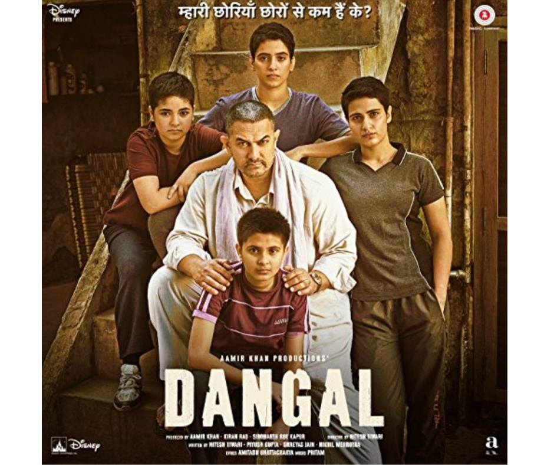

Dangal (transl. 'Wrestling competition') is a 2016 Indian Hindi-language biographical sports drama film directed by Nitesh Tiwari and produced by Aamir Khan, under his studio Aamir Khan Productions with UTV Motion Pictures and Walt Disney Pictures India. Loosely based on the Phogat family, Aamir Khan stars as Mahavir Singh Phogat, a pehlwani amateur wrestler who trains his daughters Geeta Phogat and Babita Kumari to become India's first world-class female wrestlers.[9] Fatima Sana Shaikh and Sanya Malhotra portray the adult versions of the two Phogat sisters, Zaira Wasim and Suhani Bhatnagar their younger versions, Sakshi Tanwar their mother, and Aparshakti Khurana their cousin.
Cast : Aamir Khan Sakshi Tanwar Fatima Sana Shaikh Zaira Wasim Sanya Malhotra Suhani Bhatnagar Aparshakti Khurana Girish Kulkarni
Box office collection : ₹2,024–2,100
Release date: 21 December 2016 (United States), 23 December 2016 (India), 5 May 2017 (China)
Running time: 161 minutes
Country: India
Language: Hindi
Budget: ₹70 crore
